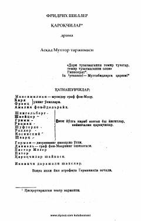

QAka-uka o'rtasidagi adovat va adolat uchun kurash haqidagi mashhur drama.
Fridrix Shillerning ushbu mashhur dramasi aka-uka Karl va Frans Moorlar o'rtasidagi adovat hamda jamiyatdagi adolatsizliklarga qarshi isyon haqida hikoya qiladi. Asarda oilaviy fojia, xiyonat va erkinlik uchun kurash mavzulari teran yoritilgan. Piesa Asqad Muxtor tomonidan o'zbek tiliga mahorat bilan tarjima qilingan.